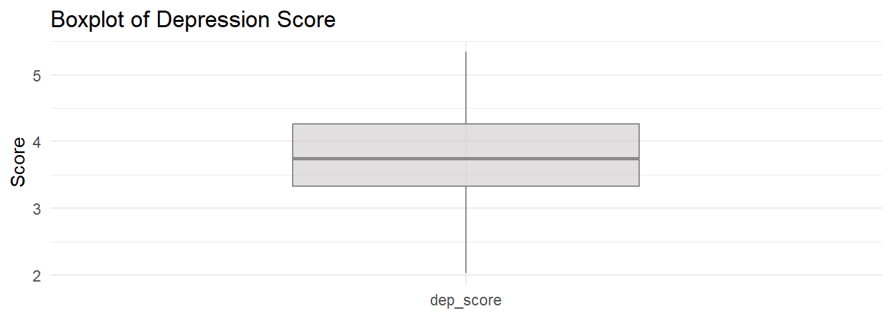
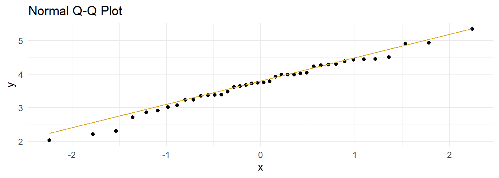
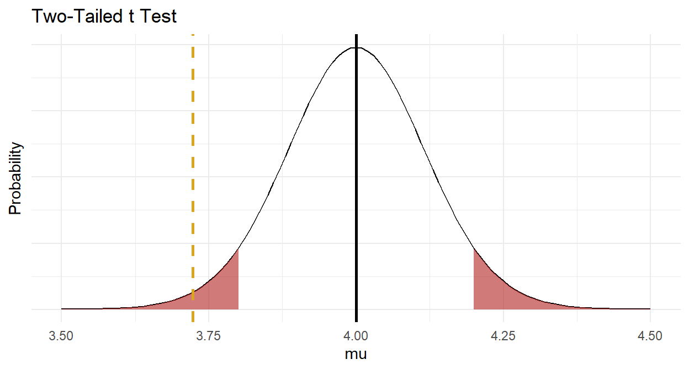

4.2 One-Sample Mean t Test
The one-sample t test applies when the sampling distribution of the population mean is normally distributed and there are no significant outliers. Unlike the z test, the population variance can be unknown. The sampling distribution is normally distributed when the underlying population is normally distributed, or when the sample size is large \((n >= 30)\), as follows from the central limit theorem.
Under the t test method, the measured mean, \(\bar{x}\), approximates the population mean, \(\mu\). The sample standard deviation, \(s\), estimates the unknown population standard deviation, \(\sigma\). The resulting sampling distribution has a t distribution centered at \(\mu\) with standard error \(se_\bar{x} = \frac{s}{\sqrt{n}}\). Define a \((1 - \alpha)\%\) confidence interval as \(\bar{x} \pm t_{(1 - \alpha){/}2} se_\bar{x}\) and/or test \(H_0: \mu = \mu_0\) with test statistic \(T = \frac{\bar{x} - \mu_0}{se_\bar{x}}\).
Example
A researcher recruits a random sample of n = 40 people to participate in a study about depression intervention. The researcher measures the participants’ depression level prior to the study. The mean depression score (3.72 \(\pm\) 0.74) was lower than the population ‘normal’ depression score of 4.0. The null hypothesis is that the sample is representative of the overall population. Should you reject \(H_0\)?
| Characteristic | N = 401 |
|---|---|
| dep_score | 3.72 (0.74) |
| 1 Mean (SD) | |
Conditions
The one-sample t test applies when the variable is continuous and the observations are independent. Additionally, there are two conditions related to the data distribution. If either condition fails, try the suggested work-arounds or use the non-parametric [Wilcoxon 1-Sample Median Test for Numeric Var] instead.
- Outliers. There should be no significant outliers. Outliers exert a large influence on the mean and standard deviation. Test with a box plot. If there are outliers, you might be able to drop them or transform the data.
- Normality. Values should be nearly normally distributed (“nearly” because the t-test is robust to the normality assumption). This condition is especially important with small sample sizes. Test with Q-Q plots or the Shapiro-Wilk test for normality. If the data is very non-normal, you might be able to transform the data.
Outliers
Assess outliers with a box plot. Box plot whiskers extend up to 1.5*IQR from the upper and lower hinges and outliers (beyond the whiskers) are are plotted individually. The boxplot shows no outliers.

If the outliers might are data entry errors or measurement errors, fix them or discard them. If the outliers are genuine, you have a couple options before reverting to Wilcoxon.
- Transform the variable. Don’t do this unless the variable is also non-normal. Transformation also has the downside of making interpretation more difficult.
- Leave it in if it doesn’t affect the conclusion (compared to taking it out).
Normality
Assume the population is normally distributed if n \(\ge\) 30. Otherwise, asses a Q-Q plot, skewness and kurtosis values, or a histogram. If you still don’t feel confident about normality, run a [Shapiro-Wilk Test].
The data set has n = 40 observations, so you can assume normality. Here is a QQ plot anyway. The QQ plot indicates normality.
dep %>%
ggplot(aes(sample = dep_score)) +
stat_qq() +
stat_qq_line(col = "goldenrod") +
theme_minimal() +
labs(title = "Normal Q-Q Plot")
Here is the Shapiro-Wilk normality test. It fails to reject the null hypothesis of a normally distributed population.
##
## Shapiro-Wilk normality test
##
## data: dep$dep_score
## W = 0.98446, p-value = 0.8474If the data is not normally distributed, you still have a couple options before reverting to Wilcoxon.
- Transform the dependent variable.
- Carry on regardless - the one-sample t-test is fairly robust to deviations from normality.
Results
Conduct the t-test. To get a 95% CI around the difference (instead of around the estimate), run the test using the difference, \(\mu_0 - \bar{x}\), and leave mu at its default of 0.
##
## One Sample t-test
##
## data: mu_0 - dep$dep_score
## t = 2.3811, df = 39, p-value = 0.02224
## alternative hypothesis: true mean is not equal to 0
## 95 percent confidence interval:
## 0.04176615 0.51323385
## sample estimates:
## mean of x
## 0.2775The difference is statistically different from 0 at the p = .05 level. The effect size, called Cohen’s d, is defined as \(d = |M_D| / s\), where \(|M_D| = \bar{x} - \mu_0\), and \(s\) is the sample standard deviation. \(d <.2\) is considered trivial, \(.2 \le d < .5\) small, and \(.5 \le d < .8\) large.
## Cohen's d
## 0.3764788Cohen’s d is 0.38, a small effect.
Make a habit of constructing a plot, just to make sure your head is on straight.

Now you are ready to report the results.
A one-sample t-test was run to determine whether depression score in recruited subjects was different from normal, as defined as a depression score of 4.0. Depression scores were normally distributed, as assessed by Shapiro-Wilk’s test (p > .05) and there were no outliers in the data, as assessed by inspection of a boxplot. Data are mean \(\pm\) standard deviation, unless otherwise stated. Mean depression score (3.72 \(\pm\) 0.74) was lower than the population “normal” depression score of 4.00, a statistically significant difference of 0.28 (95% CI, 0.04 to 0.51), t(39) = 2.38, p = 0.022, d = 0.38.
Appendix: Deciding Sample Size
Determine the sample size required for a maximum error \(\epsilon\) in the estimate by solving the confidence interval equation, \(\bar{x} \pm t_{(1 - \alpha){/}2} \frac{s}{\sqrt{n}}\) for \(n=\frac{{t_{\alpha/2,n-1}^2se^2}}{{\epsilon^2}}\) . Unfortunately, \(t_{\alpha/2,n-1}^2\) is dependent on \(n\), so replace it with \(z_{\alpha/2}^2\). What about \(s^2\)? Estimate it from the literature, a pilot study, or using the empirical rule that 95% of the range falls within two standard deviations, \(s=range / 4\).
For example, if the maximum tolerable error is* \(\epsilon\) = 3, and \(s\) is approximately 10, what sample size produces an \(\alpha\) =0.05 confidence level?
## [1] 43